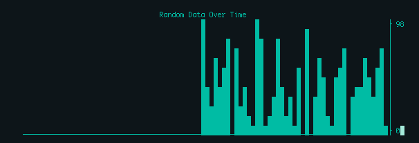

Graphs are fun, and now you can take the streaming (or static) data from any application and generate a live graph straight inside your terminal with Stag. It's lightweight, quick and a joy.
Simply pipe your newline delimited numbers and let Stag turns this:
$ ./data.sh | stagInto this:

Installation is nothing special with Stag, just download and make!
$ git clone https://github.com/seenaburns/stag.git
$ cd stag
$ sudo make && make installYou can head over to the project homepage to grab the source, documentation, examples, etc. But if you just want to install from your terminal just run the following commands.